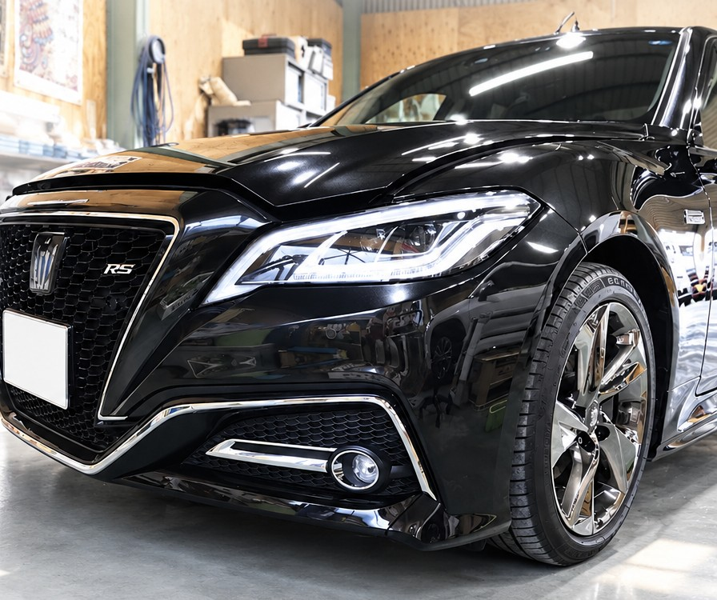
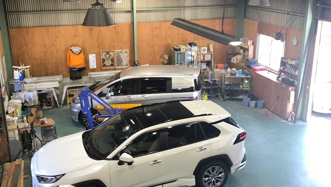
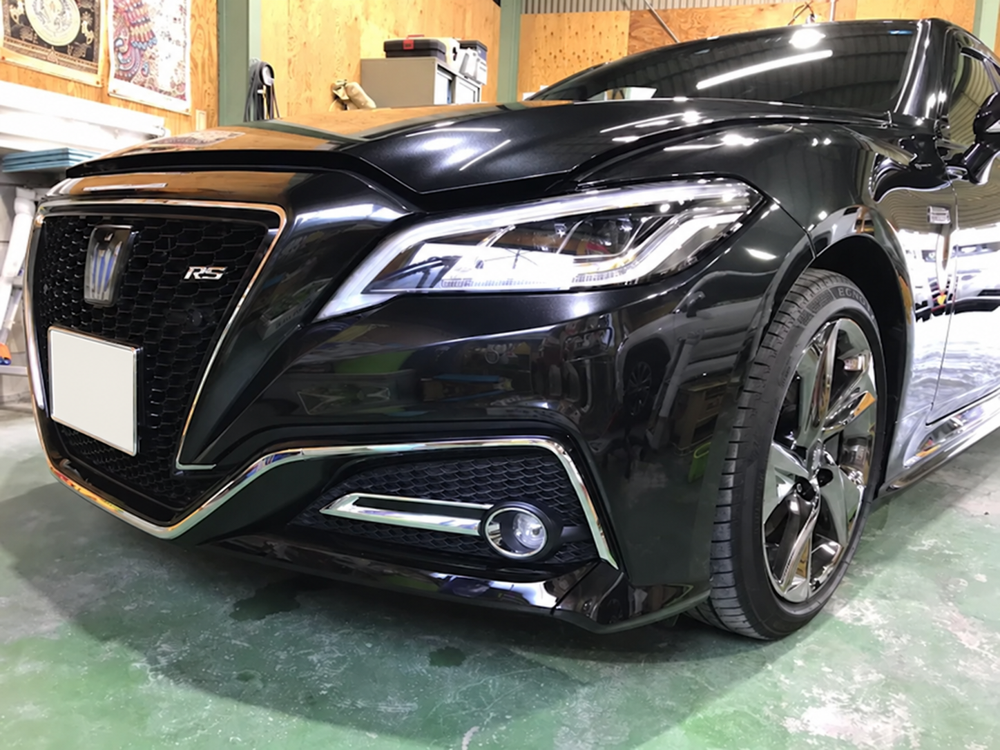
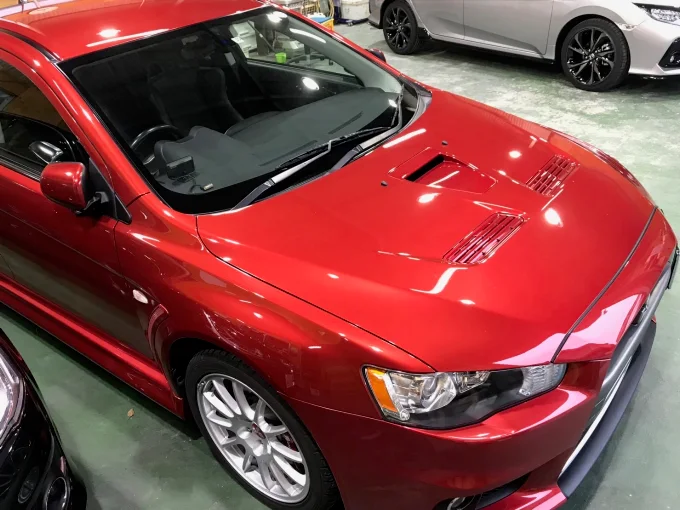
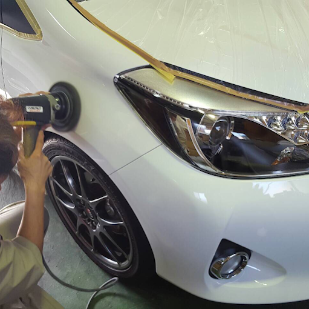
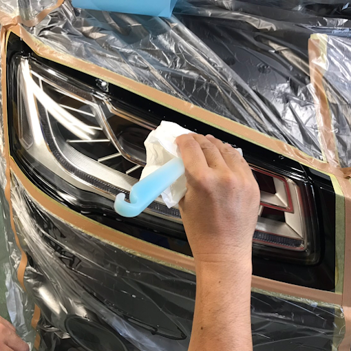
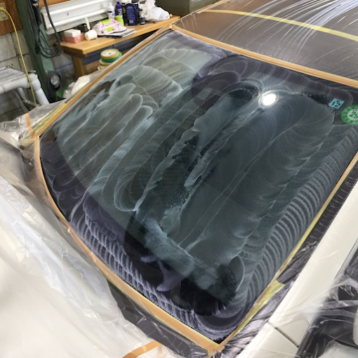
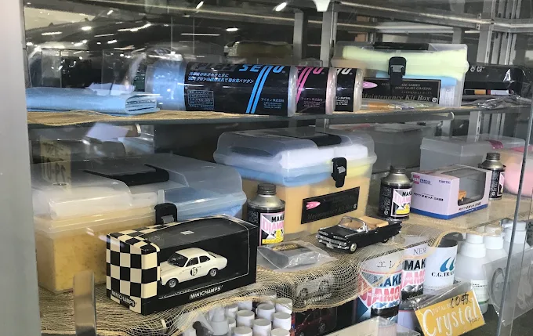
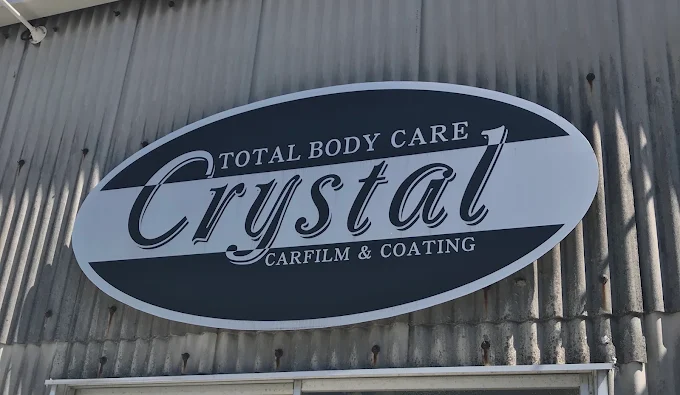

01 / LISTEN
一台を見て、
話を聞く。
塗装の状態、保管場所、洗車の習慣。メニュー名を決める前に、いまのお車と、これからの乗り方を伺います。

WHY CRYSTAL
きれいになった、その瞬間だけでなく。
これからも大切に乗る、一台のために。

01 / LISTEN
塗装の状態、保管場所、洗車の習慣。メニュー名を決める前に、いまのお車と、これからの乗り方を伺います。
02 / PREPARE
どこを整え、どこまで施工するか。見積もりの数字だけでは見えない仕事も、内容を確かめながらお選びください。
03 / CARE
洗い方やケア用品に迷ったときも。小さな疑問に親身に向き合い、施工後も、車のことを話せる関係を大切にしています。
初めての個人のお客様も。
ディーラー様からの新車施工も。
THE SHINE
新車から、いま大切に乗っている愛車まで。
色も形も違う一台一台の、美しさに向き合います。


車両写真のギャラリーです。施工内容は、お車の状態とご希望に合わせてご案内します。
OUR SERVICES
製品名や流行だけでは分からないことがあります。
お車の状態と使い方を伺い、一緒に選ぶところから。

艶を足す前に、いまの塗装に何が必要か。ボディの状態と、これからの乗り方を伺い、下地づくりからガラスコーティングまでご相談いただけます。
Crystalでは、採用するガラスコーティングを自分たちで試して選んでいます。仕上がりの美しさと、その後のお手入れのしやすさ。その両方を大切にした製品選びです。
硬さだけを基準にするのではなく、施工後のケアや、将来の磨き直しまで考える。普段の保管場所や洗車の習慣も伺い、その一台と長く付き合うための施工をご相談いただけます。
使用する製品や必要なお手入れ、下地処理の範囲は、施工前にご案内します。
コーティングとあわせて、窓・パーツ・車内まで。気になる箇所からご相談いただけます。
濃さの好みだけでなく、日差し、外からの視線、夜の見え方まで。どんな場面を心地よくしたいかを伺いながら、カーフィルムをご案内します。
見た目を引き締めたい。車内への視線を和らげたい。日差しが気になる。フィルムを考える理由は、一人ひとり異なります。
濃さや断熱などの機能は、同じものさしではありません。候補となる製品の説明を確認し、外観だけでなく車内からの見え方も相談しましょう。
製品・窓・車両によって施工できる内容は変わります。車検への適合も含め、見た目の好みだけで判断せず、施工前にご確認ください。
ヘッドライトやドアまわりなど、守りたいパーツに合わせたフィルム施工。傷みの状態と形状を確認し、施工できる範囲や仕上がりをご相談いただけます。
プロテクションフィルムは、パーツ表面をフィルムで覆う施工です。塗るコーティングとは施工方法が異なります。「何を守りたいか」「どこが気になるか」を先に整理すると、相談しやすくなります。
すでにある傷みや既存の加工、パーツの形状によって、できることは変わります。新品同様になると決めつけず、状態を見ながら対応可否を確認します。
掲載写真は、ヘッドライトへのプロテクションフィルム施工です。カーフィルムやボディコーティングの工程とは分けてご覧ください。
車を大切にする気持ちは、シートにも。素材と今の状態を確かめ、シートコーティングの施工範囲と、その後のお手入れまでご相談いただけます。
汚れが気になるのか。これからの使用に備えて保護したいのか。同じシートの相談でも、目的によって考える内容は変わります。クリーニングとコーティングを一緒にせず、ご希望を伺います。
素材や傷みの状態、既存の加工によって対応できる範囲は異なります。施工でできることと難しいこと、お手入れに使うものや注意点も、ご相談時にお確かめください。
気になる汚れや臭いを、状態に合わせて考える車内のケア。素材や汚れ方を確認し、対応できることと難しいことを含めてご案内します。
日々の汚れ、シートの気になる部分、車内に残る臭い。どこが、いつから気になるかをお聞かせください。汚れの状態や素材によって、必要な作業は変わります。
すべての汚れや臭いがなくなるとは限りません。見た目だけで簡単に判断せず、作業の範囲や見込める仕上がり、費用と日数を確認してから進めることが大切です。
ガラスの表面をケアする撥水コートから、修理・交換のご相談まで。窓のどこが気になるのかを伺い、状態に合わせてご案内します。
ウインド撥水コートは、窓の表面をケアするメニューです。ガラスに貼るカーフィルムとは別の施工として、目的やご希望の範囲を確認します。
ガラスの割れやヒビが気になる場合は、ケア用品の相談ではなく修理・交換の相談へ。状態と車種により方法が変わるため、対応可否や費用・日程を個別にお確かめください。
費用・施工日数・対応可否は、お車の状態と施工内容によって異なります。ご相談時にご確認ください。
BEHIND THE FINISH
どんな艶を目指すか。そのために、何を整えるか。
仕上がりにつながる仕事を、実際の工程からご紹介します。
01 / PREPARATION
コーティングを選ぶ前に、塗装面の状態に向き合う。下地を整える仕事は、仕上がりを考えるうえで大切な工程です。どの範囲を、どのように整えるか。見積もりの金額だけでは見えない部分も、ご相談ください。
写真はボディ研磨の作業です。

02 / PROTECTION
養生されたまわりの部分と、パーツに向き合う手元。フィルムの名前だけでは伝わらない仕事があります。いまの状態を確認し、守りたい部分と仕上がりのご希望を伺います。
写真はヘッドライトのフィルム施工です。

03 / GLASS CARE
窓のケアも、見た目だけでは選びにくいもの。気になる汚れや普段のお手入れ、希望する施工範囲からご相談ください。写真はウインド撥水コートの作業途中。施工ごとの目的を分けてご案内します。
写真は撥水コート作業です。カーフィルム施工とは異なります。

AFTER THE FINISH
きれいに仕上げて、お引き渡し。それで終わりではありません。
洗車のしかた、気になる汚れ、これからの愛車との付き合い方。
小さな疑問にも親身に向き合い、車のことを話せる場所であることを大切にしています。
採用するガラスコーティングも、自分たちで試して選ぶ。仕上がりと、その後のお手入れや磨き直しまで考えてご案内します。
来店してのご相談は、作業の都合があるため、お電話で日程をご確認ください。
お手入れを相談する ↗YOUR FIRST CONVERSATION
「艶をきれいにしたい」「お手入れが気になる」。
その気持ちから、お聞かせください。
いま、相談したいのは？
お電話のとき、こんなことをお聞かせください
車種・納車予定日・普段の保管場所。分かる範囲でお知らせください。新車のうちに相談したいことを、一緒に整理します。
まだ決まっていないことがあっても、ご相談いただけます。
9:00–18:00 ／ 日曜・祝日・夏季冬期休暇
HOW IT WORKS
車種や気になること、ご希望の施工をお知らせください。
お車の状態を確認し、施工の内容・費用・日程をご案内します。何をするのか、なぜ必要か。気になる点は施工前にお聞かせください。
施工後に仕上がりをご確認ください。お手入れ方法もお確かめください。
QUESTIONS
はい。初めての方も、施工名が分からない方もご相談ください。気になる部分や、これからどう乗っていきたいかを、そのままの言葉でお伝えいただけます。
車種・施工範囲・お車の状態によって異なります。金額だけで比べにくい下地処理や、施工の範囲、引き渡し後のお手入れも含め、内容を確認することが大切です。ご希望を伺ったうえでご案内します。
はい。素材と状態によって対応できる内容が異なるため、ご相談時にご確認ください。
仕上がりは塗装やパーツの状態、施工内容によって異なります。写真はお店や作業の様子を知る参考としてご覧ください。
仕上がりの美しさと、メンテナンスのしやすさを大切に、自分たちで試した製品を選んでいます。硬さだけを追うのではなく、施工後のお手入れや将来の磨き直しまで考えて選定しています。
実際に使用する製品と、その後のケアについては、お車の状態や使い方に合わせてご案内します。
施工する場所だけでなく、事前の確認、下地処理の範囲、仕上がりの見込み、施工日数、その後のお手入れまで聞いてみてください。同じメニュー名でも、含まれる仕事は見積もりの数字だけでは分かりません。内容を理解して選ぶための相談を、大切にしています。
お車と施工内容に合わせて、ご相談ください。使ってよい用品や洗い方、気になる変化など、迷うことをそのままにせずお聞かせください。保証や有料メンテナンスの条件、対応できる範囲は、施工時に個別にご確認ください。

VISIT CRYSTAL
クリスタル
〒448-0812 愛知県刈谷市高須町1丁目9-15
車種・気になること・ご希望の時期から、お聞かせください。
営業・勧誘目的のご連絡・ご訪問はお控えください。
LOCATION
来店時の経路は、上の「地図アプリで開く」からご確認いただけます。